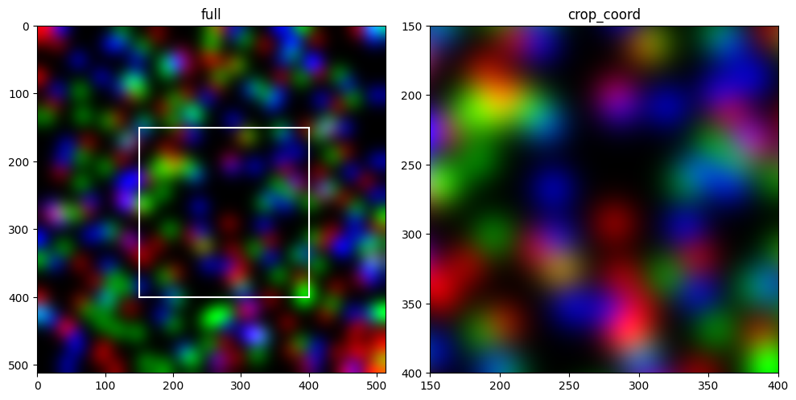
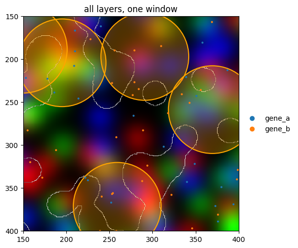
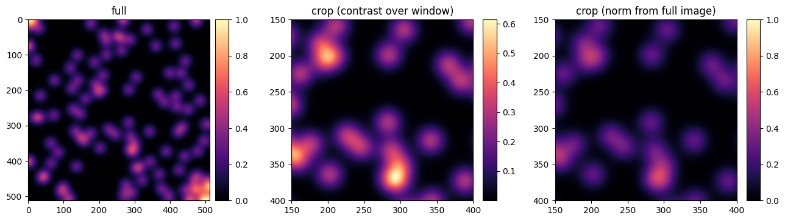
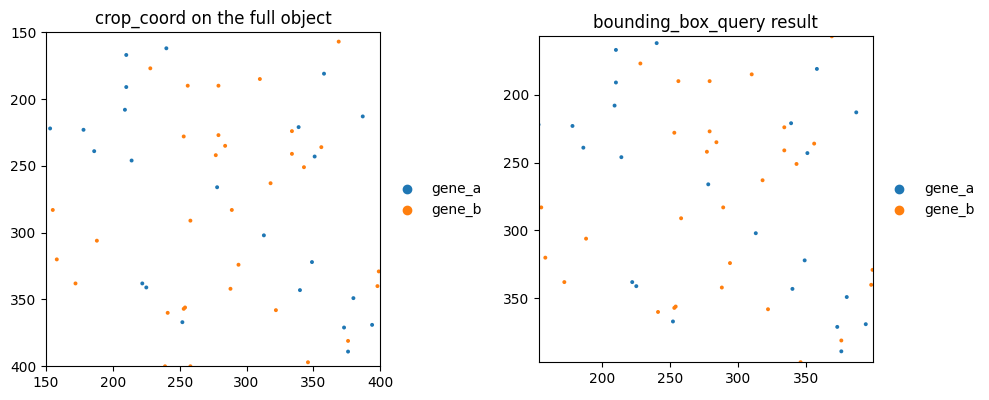

Cropping a plot with crop_coord#
Most spatial datasets are far larger than the region you want to look at. crop_coord restricts a
plot to a bounding box at draw time: the SpatialData object is untouched, only the window is
rendered — and for images and labels only the window is ever rasterized, so zooming into a
gigapixel slide costs about as much as plotting a thumbnail.
This tutorial uses the built-in blobs dataset so it runs in seconds. The same calls work on Visium,
Xenium, MERFISH, or any other SpatialData object.
Setup#
import warnings
import matplotlib.pyplot as plt
from matplotlib.patches import Rectangle
import spatialdata as sd
import spatialdata_plot # noqa: F401 # registers the .pl accessor
warnings.filterwarnings("ignore")
sdata = sd.datasets.blobs()
sdata
SpatialData object
├── Images
│ ├── 'blobs_image': DataArray[cyx] (3, 512, 512)
│ └── 'blobs_multiscale_image': DataTree[cyx] (3, 512, 512), (3, 256, 256), (3, 128, 128)
├── Labels
│ ├── 'blobs_labels': DataArray[yx] (512, 512)
│ └── 'blobs_multiscale_labels': DataTree[yx] (512, 512), (256, 256), (128, 128)
├── Points
│ └── 'blobs_points': DataFrame with shape: (<Delayed>, 4) (2D points)
├── Shapes
│ ├── 'blobs_circles': GeoDataFrame shape: (5, 2) (2D shapes)
│ ├── 'blobs_multipolygons': GeoDataFrame shape: (2, 1) (2D shapes)
│ └── 'blobs_polygons': GeoDataFrame shape: (5, 1) (2D shapes)
└── Tables
└── 'table': AnnData (26, 3)
with coordinate systems:
▸ 'global', with elements:
blobs_image (Images), blobs_multiscale_image (Images), blobs_labels (Labels), blobs_multiscale_labels (Labels), blobs_points (Points), blobs_circles (Shapes), blobs_multipolygons (Shapes), blobs_polygons (Shapes)
1. Zooming in — crop_coord#
crop_coord is a tuple (xmin, xmax, ymin, ymax) in the units of the rendered coordinate system —
the same order as ax.axis(...) and as crop_coord in scanpy.pl.spatial /
squidpy.pl.spatial_scatter. The blobs image is 512 × 512 pixels; we zoom into a 250 × 250 window.
CROP = (150, 400, 150, 400) # xmin, xmax, ymin, ymax
fig, axes = plt.subplots(1, 2, figsize=(10, 5))
sdata.pl.render_images("blobs_image").pl.show(ax=axes[0], title="full")
axes[0].add_patch(
Rectangle((CROP[0], CROP[2]), CROP[1] - CROP[0], CROP[3] - CROP[2], fill=False, edgecolor="white", lw=1.5)
)
sdata.pl.render_images("blobs_image").pl.show(ax=axes[1], crop_coord=CROP, title="crop_coord")
fig.tight_layout()

2. One window for every layer#
crop_coord is a show() argument, so it applies to every render_* call in the chain. Points and
shapes are subsetted to the window before drawing; images and labels are rasterized for the window only.
(
sdata.pl.render_images("blobs_image")
.pl.render_labels("blobs_labels", fill_alpha=0, outline_alpha=1, outline_color="white")
.pl.render_shapes("blobs_circles", color="orange", fill_alpha=0.3, outline=True, outline_color="orange")
.pl.render_points("blobs_points", color="genes", size=8)
.pl.show(crop_coord=CROP, title="all layers, one window")
)

3. Keeping colours comparable#
Cropping changes what the auto-scaled colour ranges see:
Points and shapes keep the range of the full element, so a colour in the crop means the same thing as in the uncropped plot.
Images are contrast-stretched over the window, because only the window is ever read. A crop of a dim region therefore looks brighter than the same region in the full plot.
To pin image contrast to the full-image range, pass explicit limits — a norm (or vmin/vmax):
from matplotlib.colors import Normalize
full = sdata["blobs_image"].sel(c=0)
fixed = Normalize(vmin=float(full.min()), vmax=float(full.max()))
fig, axes = plt.subplots(1, 3, figsize=(15, 5))
sdata.pl.render_images("blobs_image", channel=0, cmap="magma").pl.show(ax=axes[0], title="full")
sdata.pl.render_images("blobs_image", channel=0, cmap="magma").pl.show(
ax=axes[1], crop_coord=CROP, title="crop (contrast over window)"
)
sdata.pl.render_images("blobs_image", channel=0, cmap="magma", norm=fixed).pl.show(
ax=axes[2], crop_coord=CROP, title="crop (norm from full image)"
)
fig.subplots_adjust(wspace=0.45)

4. crop_coord vs bounding_box_query#
spatialdata.bounding_box_query builds a new SpatialData object containing only the elements
inside the box. crop_coord changes only what is drawn. The pictures are the same; the difference is
what you are left with:
use
crop_coordto look at a region — nothing is copied, and images stay lazy;use
bounding_box_querywhen you need the subset as data — to count, analyse, or save it.
Note the axes: the query result spans only the surviving points, while crop_coord pins the view to
the box.
subset = sd.bounding_box_query(
sdata,
axes=("x", "y"),
min_coordinate=[CROP[0], CROP[2]],
max_coordinate=[CROP[1], CROP[3]],
target_coordinate_system="global",
)
print(f"points in full object: {len(sdata['blobs_points'])}, in the query result: {len(subset['blobs_points'])}")
fig, axes = plt.subplots(1, 2, figsize=(10, 5))
sdata.pl.render_points("blobs_points", color="genes", size=8).pl.show(
ax=axes[0], crop_coord=CROP, title="crop_coord on the full object"
)
subset.pl.render_points("blobs_points", color="genes", size=8).pl.show(ax=axes[1], title="bounding_box_query result")
fig.tight_layout()
points in full object: 200, in the query result: 53

5. One coordinate system at a time#
The box is expressed in one coordinate system’s units, so crop_coord requires a single coordinate
system to be rendered. If your object has several, pick one with coordinate_systems="global" (or
whichever applies) in the same show() call.
For reproducibility#
# ruff: noqa: F401, F811, I001, E402
# fmt: off
import spatialdata_plot
%load_ext watermark
# fmt: on
%watermark -v -m -p spatialdata,spatialdata_plot,matplotlib,numpy
Python implementation: CPython
Python version : 3.14.4
IPython version : 9.13.0
spatialdata : 0.7.3
spatialdata_plot: 0.4.2.dev11+g1d833abbf.d20260826
matplotlib : 3.10.9
numpy : 2.4.4
Compiler : Clang 20.1.8
OS : Darwin
Release : 25.2.0
Machine : arm64
Processor : arm
CPU cores : 8
Architecture: 64bit